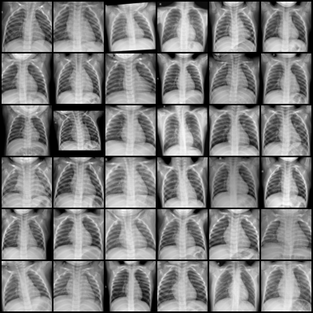
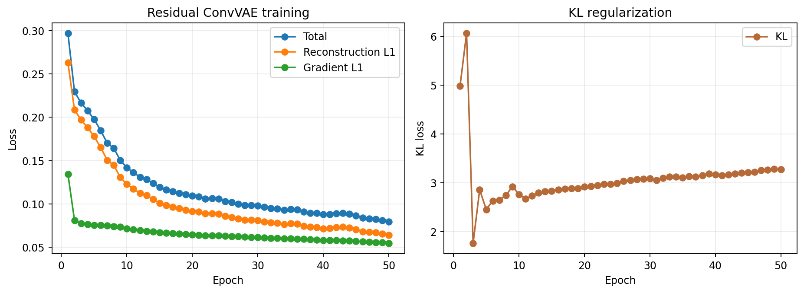
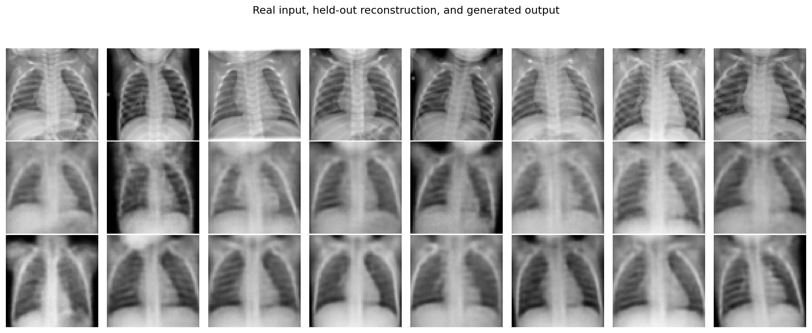
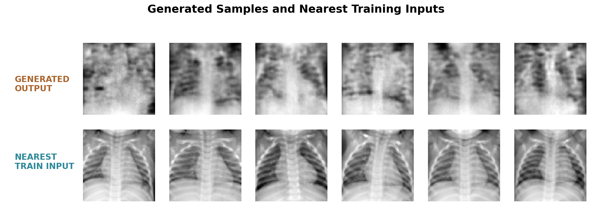

KYDW 本科生科研入门体验项目
实践项目参考答案 02：胸部 X 射线与生成模型
参考代码与说明按实践任务排列，可结合图像、指标和输出文件核对自己的实现。
运行后把图像、指标和输出文件与自己的结果放在一起阅读。
Markdown 单元格01
实践项目 02：胸部 X 射线残差卷积 VAE 图像生成
胸部 X 射线是一张单通道二维图像。残差卷积 VAE 用卷积层提取空间结构，用残差块保留局部细节，再把图像压缩到连续潜空间；解码器从潜变量重建图像或生成新的图像。
本实践从 NORMAL 目录中选取胸片。目录名只用于选择图像，不作为分类标签。每张图像统一为单通道 64×64，并归一化到 [-1,1]。当前固定图像级划分为 1073 张训练图像和 268 张留出图像；两组文件不重叠。模型、损失和训练更新的参考实现对应输入、重建、潜空间采样、最近邻与插值结果。
Kaggle 是本项目的首选实践入口。打开公开 Notebook 后点击“复制并编辑”保存到自己的账户，再按单元格逐步运行和修改；下载 Notebook 到电脑运行是补充方式。本页提供完整参考代码；先查看 shape、变量名和检查条件，再按顺序运行。运行后结合图像、指标和输出文件阅读。
Markdown 单元格02
数据检查与结果阅读
输入图像先经过灰度化、缩放和归一化，得到 [B,1,64,64] 的张量。固定划分把 1073 张图像用于训练，把 268 张图像留作重建检查；留出文件不会进入训练更新。残差块在不改变 shape 的情况下细化局部结构；四次下采样把空间尺寸变为 4×4，线性层把特征变成 mu 与 logvar。重参数化得到潜变量 z，解码器再把它还原成图像。
重建 L1 关注像素差异，梯度 L1 关注相邻像素的变化，KL 项约束潜变量分布。训练完成后，用输入做重建，用潜变量插值和采样观察新的输出。
代码单元格03
from pathlib import Path # 用 Path 处理文件和目录路径
import json, random, re
import numpy as np # 导入数组和数值运算工具
import matplotlib.pyplot as plt # 导入绘图工具
from PIL import Image, ImageOps
import torch # 导入张量、模型或数据加载工具
import torch.nn as nn # 导入张量、模型或数据加载工具
import torch.nn.functional as F # 导入张量、模型或数据加载工具
from torch.utils.data import DataLoader, Dataset # 导入张量、模型或数据加载工具
from torchvision import utils # 导入张量、模型或数据加载工具
# 固定随机种子和训练规模，便于重复得到相近的训练过程和结果。
SEED=20260803 # 固定随机状态以便复现实验
TRAIN_COUNT=1073 # 指定固定训练集的图像数量
HOLDOUT_COUNT=268 # 指定固定留出集的图像数量
BATCH_SIZE=64 # 设置每批读取的图像数量
EPOCHS=50
LATENT_DIM=64 # 设置每张图像对应的潜向量维数
random.seed(SEED); np.random.seed(SEED); torch.manual_seed(SEED) # 固定随机状态以便复现实验
if torch.cuda.is_available():
torch.cuda.manual_seed_all(SEED) # 固定随机状态以便复现实验
# 某些 Kaggle 镜像会提供较旧的 P100 等 GPU，但当前 PyTorch 未必包含对应的 CUDA kernel。
# 先检查计算能力；不兼容时改用 CPU，避免在第一次前向计算时出现 CUDA kernel 错误。
cuda_usable=False
if torch.cuda.is_available():
try:
device_capability=torch.cuda.get_device_capability(0)
cuda_usable=device_capability[0]>=7
except Exception:
cuda_usable=False
if torch.cuda.is_available() and not cuda_usable:
print('当前 GPU 架构不在本 PyTorch 支持范围内，改用 CPU 运行。')
DEVICE=torch.device('cuda' if cuda_usable else 'cpu') # 选择可用的计算设备
OUT=Path('/kaggle/working') if Path('/kaggle/working').exists() else Path.cwd()/'outputs' # 确定本次结果的输出目录
OUT.mkdir(parents=True,exist_ok=True)
print('device:',DEVICE)
Markdown 单元格04
1. 数据路径与预处理
推荐挂载 chest-xray-pneumonia。数据应包含 train/NORMAL 和 train/PNEUMONIA 目录。本实践只读取 NORMAL，不把目录名作为标签。下载到电脑运行时保留同样的目录结构。
使用 EXIF 方向校正后，把每张图像按中心裁切方式缩放为 64×64。像素先变为 [0,1]，再映射到 [-1,1]，因此解码器最后使用 Tanh()。固定划分按图像文件进行，不把同一文件同时放进训练集和留出集。
代码单元格05
INPUT_ROOT=Path('/kaggle/input') if Path('/kaggle/input').exists() else Path.cwd()/'data' # 指定输入图像所在目录
def is_valid_image(path):
return path.is_file() and '__MACOSX' not in path.parts and not path.name.startswith('._') and path.suffix.lower() in {'.jpeg','.jpg'}
candidates=[p for p in INPUT_ROOT.rglob('train') if p.is_dir() and '__MACOSX' not in p.parts and (p/'NORMAL').is_dir()]
assert candidates,'未找到包含 NORMAL 的 chest_xray/train 目录。' # 核对数据或计算结果是否符合预期条件
DATA_ROOT=sorted(candidates,key=lambda p:str(p))[0] # 选取含 NORMAL 图像目录的数据根路径
all_files=sorted([p for p in (DATA_ROOT/'NORMAL').iterdir() if is_valid_image(p)]) # 列出可读取的 NORMAL 胸片文件
assert len(all_files)>=TRAIN_COUNT+HOLDOUT_COUNT, f'NORMAL 胸片数量不足：{len(all_files)}' # 核对数据或计算结果是否符合预期条件
def load_xray(path):
# 每张图像都走同一套灰度化、裁切和归一化，保证 batch shape 一致。
with Image.open(path) as image:
image=ImageOps.exif_transpose(image).convert('L')
image=ImageOps.fit(image,(64,64),method=Image.Resampling.BILINEAR,centering=(.5,.5))
array=np.asarray(image,dtype=np.float32)/255.0
return torch.from_numpy(array).unsqueeze(0)*2.0-1.0
class XrayDataset(Dataset):
def __init__(self,files): self.files=list(files)
def __len__(self): return len(self.files)
def __getitem__(self,index): return load_xray(self.files[index])
# 先固定文件顺序，再按同一个随机排列切出训练集和留出集。
rng=np.random.default_rng(SEED) # 固定随机状态以便复现实验
order=rng.permutation(len(all_files)) # 打乱文件索引以形成固定划分
train_files=[all_files[int(i)] for i in order[:TRAIN_COUNT]] # 取出用于更新模型参数的图像文件
holdout_files=[all_files[int(i)] for i in order[TRAIN_COUNT:TRAIN_COUNT+HOLDOUT_COUNT]] # 取出用于检查重建结果的留出文件
assert set(train_files).isdisjoint(holdout_files) # 核对数据或计算结果是否符合预期条件
train_dataset=XrayDataset(train_files)
holdout_dataset=XrayDataset(holdout_files)
train_loader=DataLoader(train_dataset,batch_size=BATCH_SIZE,shuffle=True,generator=torch.Generator().manual_seed(SEED),num_workers=0,drop_last=True) # 固定随机状态以便复现实验
holdout_loader=DataLoader(holdout_dataset,batch_size=BATCH_SIZE,shuffle=False,num_workers=0) # 按批次读取数据，训练集按设置打乱顺序
# loader 是题目后续训练单元使用的简短别名；它只指向训练集。
loader=train_loader
reference_images=next(iter(train_loader)) # 取一批训练图像用于输入可视化
holdout_reference_images=next(iter(holdout_loader)) # 取一批留出图像用于重建检查
utils.save_image((reference_images[:36]+1)/2,OUT/'task2_real_xray_grid.png',nrow=6) # 将当前图像写入结果目录
real_display=((reference_images+1)/2).clamp(0,1) # 把归一化像素转换回图像显示范围
plt.figure(figsize=(7.2,4.2))
plt.hist(real_display.flatten().numpy(),bins=60,color='#2b7b9b',alpha=.88)
plt.xlabel('pixel intensity [0,1]'); plt.ylabel('count')
plt.title('Real chest X-ray intensity distribution')
plt.tight_layout(); plt.savefig(OUT/'task2_intensity_histogram.png',dpi=160); plt.show() # 将当前图像写入结果目录
print('data root:',DATA_ROOT)
print('available NORMAL images:',len(all_files))
print('train:',len(train_dataset),'holdout:',len(holdout_dataset),'shape:',tuple(reference_images.shape),'range:',float(reference_images.min()),float(reference_images.max()))
Markdown 单元格06
任务 1：解释归一化范围
参考实现说明： 说明真实胸片为何归一化到 [-1, 1]，以及 Decoder 末层为什么使用 Tanh。
依据： 预处理使用 Normalize([.5],[.5])，输入显示前通过 (image+1)/2 映射回 [0,1]；Decoder 输出范围应与训练输入范围匹配。
检查： 参考实现应同时覆盖输入范围、Decoder 输出范围和显示范围之间的对应关系。
Markdown 单元格07
参考说明： 原始像素除以 255 得到 [0,1]，再用 x * 2 - 1 映射到 [-1,1]。解码器末层使用 Tanh，输出范围同样是 [-1,1]，因此重建损失比较的是同一数值范围。显示图像时再用 (x + 1) / 2 映射回 [0,1]。
Markdown 单元格08
任务 2：实现残差卷积 VAE 的编码、潜变量和解码
参考实现使用保持空间尺寸的残差块、stride 为 2 的下采样卷积和转置卷积。四次下采样把 [B,1,64,64] 变为 [B,256,4,4]；展平后由 to_mu、to_logvar 得到 [B,64]。重参数化使用 mu + exp(0.5 * logvar) * epsilon，解码器再把潜变量还原为 [B,1,64,64]。
代码单元格09
LATENT_DIM=64 # 设置每张图像对应的潜向量维数
# 参考实现：依据上方的 shape 说明，补全残差块、下采样、上采样、mu/logvar、重参数化和 forward。
# 每次下采样都把高和宽减半；四次下采样后 [B,1,64,64] 应变为 [B,256,4,4]。
def group_count(channels):
return 8 if channels % 8 == 0 else 1
class ResidualBlock(nn.Module):
"""两个 3×3 卷积和一条跳连，输入输出 shape 相同。"""
def __init__(self,channels):
super().__init__()
# 参考实现：补全归一化、卷积和激活层；通道数不能改变
self.norm1=nn.GroupNorm(group_count(channels),channels)
self.conv1=nn.Conv2d(channels,channels,3,padding=1) # 用卷积提取局部图像特征
self.norm2=nn.GroupNorm(group_count(channels),channels)
self.conv2=nn.Conv2d(channels,channels,3,padding=1) # 用卷积提取局部图像特征
self.activation=nn.SiLU(inplace=True) # 加入非线性激活
def forward(self,x):
# 参考实现：先归一化、激活、卷积两次，再加回 residual
residual=x # 保留残差连接的原始输入
x=self.conv1(self.activation(self.norm1(x)))
x=self.conv2(self.activation(self.norm2(x)))
return residual+x
class DownBlock(nn.Module):
def __init__(self,in_channels,out_channels):
super().__init__()
# 参考实现：stride=2 的卷积负责改变空间尺寸，ResidualBlock 负责细化特征
self.down=nn.Conv2d(in_channels,out_channels,4,2,1) # 用卷积提取局部图像特征
self.norm=nn.GroupNorm(group_count(out_channels),out_channels)
self.activation=nn.SiLU(inplace=True) # 加入非线性激活
self.residual=ResidualBlock(out_channels)
def forward(self,x):
return self.residual(self.activation(self.norm(self.down(x))))
class UpBlock(nn.Module):
def __init__(self,in_channels,out_channels):
super().__init__()
# 参考实现：用 ConvTranspose2d 将空间尺寸扩大 2 倍
self.up=nn.ConvTranspose2d(in_channels,out_channels,4,2,1) # 用卷积提取局部图像特征
self.norm=nn.GroupNorm(group_count(out_channels),out_channels)
self.activation=nn.SiLU(inplace=True) # 加入非线性激活
self.residual=ResidualBlock(out_channels)
def forward(self,x):
return self.residual(self.activation(self.norm(self.up(x))))
class ResidualConvVAE(nn.Module):
def __init__(self,latent_dim=LATENT_DIM):
super().__init__()
# 参考实现：补全 stem、四个 DownBlock、两个潜变量线性层、from_z 和四个 UpBlock
self.stem=nn.Sequential(nn.Conv2d(1,32,3,padding=1),nn.GroupNorm(8,32),nn.SiLU(inplace=True)) # 用卷积提取局部图像特征
self.encoder=nn.Sequential(ResidualBlock(32),DownBlock(32,64),DownBlock(64,128),DownBlock(128,256),DownBlock(256,256))
self.to_mu=nn.Linear(256*4*4,latent_dim) # 用线性层转换特征维数
self.to_logvar=nn.Linear(256*4*4,latent_dim) # 用线性层转换特征维数
self.from_z=nn.Linear(latent_dim,256*4*4) # 用线性层转换特征维数
self.decoder=nn.Sequential(ResidualBlock(256),UpBlock(256,256),UpBlock(256,128),UpBlock(128,64),UpBlock(64,32),nn.Conv2d(32,1,3,padding=1),nn.Tanh()) # 用卷积提取局部图像特征
def encode(self,x):
# 参考实现：得到 [B,256,4,4]，展平后分别得到 mu 与 logvar
features=self.encoder(self.stem(x)).flatten(1)
mu=self.to_mu(features) # 得到潜变量分布的均值
logvar=self.to_logvar(features).clamp(-8,8) # 得到潜变量对数方差并限制极端数值
return mu,logvar
@staticmethod
def reparameterize(mu,logvar):
# 参考实现：使用 z = mu + exp(0.5*logvar)*epsilon
std=torch.exp(.5*logvar) # 将对数方差转换为标准差
return mu+torch.randn_like(std)*std
def decode(self,z):
# 参考实现：先把 z 变成 [B,256,4,4]，再逐步还原到 [B,1,64,64]
features=self.from_z(z).view(-1,256,4,4)
return self.decoder(features)
def forward(self,x):
# 参考实现：依次完成 encode、reparameterize 和 decode
mu,logvar=self.encode(x)
z=self.reparameterize(mu,logvar) # 根据均值、标准差与随机噪声生成潜向量
return self.decode(z),mu,logvar,z
vae=ResidualConvVAE().to(DEVICE)
with torch.no_grad(): # 评价和展示时关闭梯度记录
probe=reference_images[:2].to(DEVICE)
probe_reconstruction,probe_mu,probe_logvar,probe_z=vae(probe)
print('mu:',tuple(probe_mu.shape),'logvar:',tuple(probe_logvar.shape),'z:',tuple(probe_z.shape))
print('reconstruction:',tuple(probe_reconstruction.shape))
assert tuple(probe_mu.shape)==(2,LATENT_DIM) # 核对数据或计算结果是否符合预期条件
assert tuple(probe_logvar.shape)==(2,LATENT_DIM) # 核对数据或计算结果是否符合预期条件
assert tuple(probe_z.shape)==(2,LATENT_DIM) # 核对数据或计算结果是否符合预期条件
assert tuple(probe_reconstruction.shape)==(2,1,64,64) # 核对数据或计算结果是否符合预期条件
Markdown 单元格10
任务 3：组合重建、边缘与 KL 损失并训练 50 轮
参考实现分别计算像素重建 L1、相邻像素梯度 L1 和 KL 项，并按 reconstruction + 0.25 × gradient + beta × KL 相加。beta 在前 10 轮从较小值逐步增加到 0.0005。每个 batch 按清空梯度、前向计算、反向传播、梯度裁剪和优化器更新的顺序执行，共训练 50 轮；history 保存四条损失曲线。
代码单元格11
EDGE_WEIGHT=.25 # 设置图像梯度损失的权重
KL_WEIGHT=.0005 # 设置潜变量分布约束的最终权重
KL_WARMUP_EPOCHS=10
def gradient_loss(pred,target):
"""用横向和纵向相邻像素差比较轮廓。"""
pred_dx=pred[:,:,:,1:]-pred[:,:,:,:-1] # 计算预测图像相邻列的像素差
target_dx=target[:,:,:,1:]-target[:,:,:,:-1] # 计算目标图像相邻列的像素差
pred_dy=pred[:,:,1:,:]-pred[:,:,:-1,:] # 计算预测图像相邻行的像素差
target_dy=target[:,:,1:,:]-target[:,:,:-1,:] # 计算目标图像相邻行的像素差
return .5*(F.l1_loss(pred_dx,target_dx)+F.l1_loss(pred_dy,target_dy)) # 计算预测值与目标之间的损失
# 参考实现：补全重建 L1、梯度 L1 和 KL 三项，并按 beta warm-up 组合总损失。
def vae_loss(reconstruction,target,mu,logvar,beta):
# 参考实现：重建项比较像素，梯度项比较相邻像素，KL 项使用 mu/logvar。
reconstruction_component=F.l1_loss(reconstruction,target) # 计算预测值与目标之间的损失
edge_component=gradient_loss(reconstruction,target)
kl_component=-.5*torch.mean(1+logvar-mu.square()-logvar.exp()) # 计算潜变量分布与标准正态分布的 KL 项
total_loss=reconstruction_component+EDGE_WEIGHT*edge_component+beta*kl_component # 累计评价集各批次的样本损失
return total_loss,reconstruction_component,edge_component,kl_component
optimizer=torch.optim.AdamW(vae.parameters(),lr=2e-4,weight_decay=1e-4)
history={'total_loss':[],'reconstruction_l1':[],'edge_l1':[],'kl_loss':[]} # 记录每轮训练与验证指标
# 参考实现：补全每个 batch 的清梯度、反向传播、梯度裁剪和参数更新；beta 前 10 轮逐步增加。
for epoch in range(1,EPOCHS+1):
vae.train() # 切换为训练模式
beta=KL_WEIGHT*min(1.0,epoch/KL_WARMUP_EPOCHS)
epoch_values={key:[] for key in history}
for batch_images in train_loader:
batch_images=batch_images.to(DEVICE)
# 参考实现：清空梯度，前向计算，反向传播，梯度裁剪，再更新参数。
optimizer.zero_grad(set_to_none=True) # 清空上一个批次留下的梯度
reconstruction,mu,logvar,_=vae(batch_images)
total_loss,reconstruction_component,edge_component,kl_component=vae_loss(reconstruction,batch_images,mu,logvar,beta)
total_loss.backward() # 根据损失计算各参数的梯度
optimizer.step() # 按当前梯度更新模型参数
epoch_values['total_loss'].append(float(total_loss.detach().cpu()))
epoch_values['reconstruction_l1'].append(float(reconstruction_component.detach().cpu()))
epoch_values['edge_l1'].append(float(edge_component.detach().cpu()))
epoch_values['kl_loss'].append(float(kl_component.detach().cpu()))
for key in history:
history[key].append(float(np.mean(epoch_values[key]))) # 记录本轮指标，供训练曲线使用
print(epoch,history['total_loss'][-1],history['reconstruction_l1'][-1],history['edge_l1'][-1],history['kl_loss'][-1])
assert all(len(values)==EPOCHS for values in history.values()) # 核对数据或计算结果是否符合预期条件
assert all(np.isfinite(values).all() for values in [np.asarray(v) for v in history.values()]) # 核对数据或计算结果是否符合预期条件
fig,axes=plt.subplots(1,2,figsize=(10,3.5))
axes[0].plot(range(1,EPOCHS+1),history['total_loss'],label='total'); axes[0].plot(range(1,EPOCHS+1),history['reconstruction_l1'],label='reconstruction'); axes[0].plot(range(1,EPOCHS+1),history['edge_l1'],label='gradient') # 绘制各轮指标或输入信号的变化
axes[0].legend(); axes[0].set_xlabel('epoch'); axes[0].set_ylabel('loss') # 标注坐标轴含义
axes[1].plot(range(1,EPOCHS+1),history['kl_loss'],label='KL'); axes[1].set_xlabel('epoch'); axes[1].set_ylabel('KL loss'); axes[1].legend() # 绘制各轮指标或输入信号的变化
plt.tight_layout(); plt.savefig(OUT/'task2_training_curve.png',dpi=160); plt.show(); plt.close(fig) # 将当前图像写入结果目录
training_result={'model':'ResidualConvVAE','epochs':EPOCHS,'latent_dim':LATENT_DIM,'image_shape':[1,64,64],'normalization':'[-1,1]','loss_terms':['reconstruction_l1','gradient_l1','kl'],'edge_weight':EDGE_WEIGHT,'kl_weight_max':KL_WEIGHT,'kl_warmup_epochs':KL_WARMUP_EPOCHS,'train_images':len(train_dataset),'holdout_images':len(holdout_dataset),'history':history,'seed':SEED} # 固定随机状态以便复现实验
(OUT/'task2_pytorch_result.json').write_text(json.dumps(training_result,indent=2,ensure_ascii=False),encoding='utf-8') # 保存结果供后续核对
print('saved:',OUT/'task2_training_curve.png',OUT/'task2_pytorch_result.json')
Markdown 单元格12
任务 4：潜空间采样、最近邻与插值
参考实现用留出图像的 mu 生成重建，用标准正态潜变量采样生成图像，并把生成图像与训练图像比较像素距离以寻找最近邻。插值端点取两张输入图像的 mu，在潜空间中线性插值后调用 decode。结果图和 JSON 均写入 OUT，显示前把 [-1,1] 映射回 [0,1]。
代码单元格13
# 参考实现：完成采样、最近邻、插值以及对应的图片和 JSON 保存
vae.eval() # 切换为评价模式
with torch.no_grad(): # 评价和展示时关闭梯度记录
input_images=holdout_reference_images[:12].to(DEVICE) # 选取留出图像进行重建
input_mu,input_logvar=vae.encode(input_images) # 编码留出图像得到潜变量分布参数
input_latents=input_mu # 使用均值潜向量获得稳定的重建输入
reconstructions=vae.decode(input_latents) # 把留出图像的潜向量解码为重建图
sampled_latents=torch.randn(128,LATENT_DIM,device=DEVICE) # 从标准正态分布采样用于生成的潜向量
generated=vae.decode(sampled_latents) # 解码采样潜向量得到生成图像
input_reconstruction_l1=float(F.l1_loss(reconstructions,input_images).cpu()) # 计算预测值与目标之间的损失
# 结果图中的每一排都要有明确名称，读者可以直接区分原始输入、重建结果和生成结果。
fig,axes=plt.subplots(2,8,figsize=(12,4.2),gridspec_kw={'left':.14,'right':.99,'top':.82,'bottom':.08,'hspace':.12})
for col in range(8):
axes[0,col].imshow(((input_images[col].cpu().squeeze()+1)/2).clamp(0,1),cmap='gray') # 显示图像数组或矩阵
axes[1,col].imshow(((reconstructions[col].cpu().squeeze()+1)/2).clamp(0,1),cmap='gray') # 显示图像数组或矩阵
axes[0,col].axis('off'); axes[1,col].axis('off')
fig.text(.025,.62,'INPUT\nREAL CHEST X-RAY',ha='left',va='center',fontsize=12,fontweight='bold',color='#2c8798')
fig.text(.025,.27,'RECONSTRUCTION\nMODEL OUTPUT',ha='left',va='center',fontsize=12,fontweight='bold',color='#6b5b98')
fig.suptitle('Input and Reconstruction Checks',fontsize=16,fontweight='bold') # 标注当前图像的内容
plt.savefig(OUT/'task2_reconstruction_grid.png',dpi=160); plt.show(); plt.close(fig) # 将当前图像写入结果目录
utils.save_image((generated[:36].cpu()+1)/2,OUT/'task2_generated_samples.png',nrow=6) # 将当前图像写入结果目录
train_reference_images=torch.stack([train_dataset[i] for i in range(len(train_dataset))]) # 收集全部训练图像用于最近邻比较
reference_flat=train_reference_images.to(DEVICE).flatten(1) # 展平训练图像以计算像素距离
generated_flat=generated.flatten(1) # 展平生成图像以计算像素距离
nearest_distance_matrix=torch.cdist(generated_flat,reference_flat,p=1) # 计算每张生成图与各训练图的像素 L1 距离
nearest_distances,nearest_indices=nearest_distance_matrix.min(dim=1)
nearest_images=train_reference_images[nearest_indices.cpu()]
displayed_count=min(6,len(generated)) # 限制最近邻对照图展示的样本数量
fig,axes=plt.subplots(2,6,figsize=(12,4.5),gridspec_kw={'left':.14,'right':.99,'top':.82,'bottom':.08,'hspace':.12})
for col in range(displayed_count):
axes[0,col].imshow(((generated[col].cpu().squeeze()+1)/2).clamp(0,1),cmap='gray') # 显示图像数组或矩阵
axes[1,col].imshow(((nearest_images[col].cpu().squeeze()+1)/2).clamp(0,1),cmap='gray') # 显示图像数组或矩阵
axes[0,col].axis('off'); axes[1,col].axis('off')
for col in range(displayed_count,6):
axes[0,col].axis('off'); axes[1,col].axis('off')
fig.text(.025,.62,'GENERATED\nOUTPUT',ha='left',va='center',fontsize=12,fontweight='bold',color='#a9652d')
fig.text(.025,.27,'NEAREST\nTRAIN INPUT',ha='left',va='center',fontsize=12,fontweight='bold',color='#2c8798')
fig.suptitle('Generated Samples and Nearest Training Inputs',fontsize=16,fontweight='bold') # 标注当前图像的内容
plt.savefig(OUT/'task2_nearest_neighbors.png',dpi=160); plt.show(); plt.close(fig) # 将当前图像写入结果目录
with torch.no_grad(): # 评价和展示时关闭梯度记录
interpolation_weights=torch.linspace(0,1,steps=8,device=DEVICE) # 生成两个潜向量之间的插值权重
interpolation_latents=torch.stack([torch.lerp(input_mu[0],input_mu[1],weight) for weight in interpolation_weights]) # 按权重连接两个输入图像的潜向量
interpolated=vae.decode(interpolation_latents) # 解码插值潜向量，观察图像随权重的变化
utils.save_image((interpolated.cpu()+1)/2,OUT/'task2_latent_interpolation.png',nrow=8) # 将当前图像写入结果目录
pixels_per_image=int(np.prod(reference_images.shape[1:])) # 计算单张图像的像素数量
nearest_l1=nearest_distances/pixels_per_image # 把像素距离总和转换为每像素平均距离
latent_result={'latent_dim':LATENT_DIM,'sample_count':int(len(sampled_latents)),'nearest_neighbor_count':int(len(nearest_distances)),'nearest_neighbor_l1_mean':float(nearest_l1.mean().cpu()),'nearest_neighbor_l1_min':float(nearest_l1.min().cpu()),'interpolation_steps':int(len(interpolation_weights)),'input_reconstruction_l1':input_reconstruction_l1,'outputs':['task2_reconstruction_grid.png','task2_generated_samples.png','task2_nearest_neighbors.png','task2_latent_interpolation.png']}
(OUT/'task2_latent_result.json').write_text(json.dumps(latent_result,indent=2,ensure_ascii=False),encoding='utf-8') # 保存结果供后续核对
# 这张图只比较两类内容：上排为真实输入，下排为潜空间采样得到的生成结果。
fig,axes=plt.subplots(2,8,figsize=(12,4.2),gridspec_kw={'left':.14,'right':.99,'top':.82,'bottom':.08,'hspace':.12})
for col in range(8):
axes[0,col].imshow(((input_images[col].cpu().squeeze()+1)/2).clamp(0,1),cmap='gray') # 显示图像数组或矩阵
axes[1,col].imshow(((generated[col].cpu().squeeze()+1)/2).clamp(0,1),cmap='gray') # 显示图像数组或矩阵
axes[0,col].axis('off'); axes[1,col].axis('off')
fig.text(.025,.62,'INPUT\nREAL CHEST X-RAY',ha='left',va='center',fontsize=12,fontweight='bold',color='#2c8798')
fig.text(.025,.27,'GENERATED OUTPUT\nLATENT SAMPLE',ha='left',va='center',fontsize=12,fontweight='bold',color='#a9652d')
fig.suptitle('Input vs Generated Output',fontsize=16,fontweight='bold') # 标注当前图像的内容
plt.savefig(OUT/'task2_input_generated_comparison.png',dpi=160); plt.show(); plt.close(fig) # 将当前图像写入结果目录
training_result.update({'input_shape':list(input_images.shape[1:]),'reconstruction_shape':list(reconstructions.shape[1:]),'generated_shape':list(generated.shape[1:]),'outputs':['task2_real_xray_grid.png','task2_intensity_histogram.png','task2_training_curve.png','task2_reconstruction_grid.png','task2_input_generated_comparison.png','task2_generated_samples.png','task2_nearest_neighbors.png','task2_latent_interpolation.png','task2_pytorch_result.json','task2_latent_result.json']})
(OUT/'task2_pytorch_result.json').write_text(json.dumps(training_result,indent=2,ensure_ascii=False),encoding='utf-8') # 保存结果供后续核对
print('generated:',tuple(generated.shape),'nearest mean L1:',float(nearest_l1.mean()))
print('saved:',OUT/'task2_reconstruction_grid.png',OUT/'task2_generated_samples.png',OUT/'task2_nearest_neighbors.png',OUT/'task2_latent_interpolation.png',OUT/'task2_latent_result.json')
Markdown 单元格14
任务 5：观察输入、重建、生成与潜空间结果
从输入/重建对照、生成网格、最近邻图和插值图中记录可辨认结构、模糊区域、伪影、样本差异和连续变化。结合损失曲线与 JSON 数值，说明图像证据和数值证据是否一致。
下方列出观察提示。请根据本次运行的图像与数值，记录输入与重建差异、生成样本质量、最近邻比较和插值变化。
Markdown 单元格15
观察提示：
- 输入与重建：查看胸片整体轮廓及主要亮暗区域在重建图中是否保留，并记录具体的模糊或缺失位置。
- 生成样本：比较潜空间随机采样图像的轮廓、亮暗区域和样本差异。
- 最近邻比较：生成样本与训练集最近邻一起查看，用于检查是否出现明显记忆。
- 潜空间插值：插值序列用于观察潜变量变化是否带来连续的图像变化。
- 损失与综合判断：L1、边缘和 KL 三项共同描述训练过程，结合留出集结果和图像检查。
参考输出
当前 Kaggle 参考运行的输入重建 L1 为 0.0928；生成样本到真实图库的最近邻 L1 均值为 0.1859、最小值为 0.1310。生成结果用于观察模型分布和记忆风险，不当作新的临床影像。

真实胸片样本网格
残差卷积 VAE 的训练曲线
真实输入与潜空间采样生成结果
生成样本与真实训练图库最近邻检查